Transfert électronique de fonds (TEF)
Résumé |
|---|
|
Ce module permet de créer des fichiers de transfert pour effectuer des transferts électroniques de fonds
(TEF) aux fournisseurs et/ou aux clients. Les fichiers générés par Odoo peuvent être transmis aux
institutions financières via leur application en ligne afin de compléter les transactions bancaires.
|
Module(s) requis |
|---|
Comptabilité |
|
Étapes de mise en place / configuration du module
|
|---|
-
Dans le module Paramètres, CONFIGURATION / UTILISATEURS ET SOCIÉTÉS / UTILISATEURS, dans la section Autres, cocher les cases pertinentes pour les utilisateurs concernées.
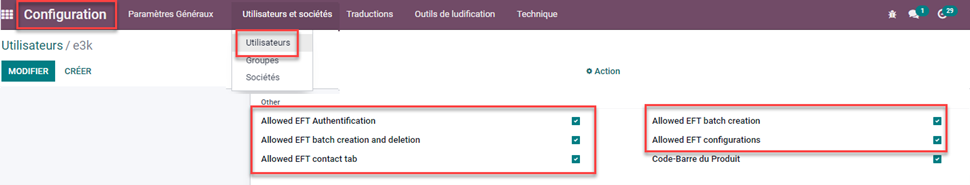
Définitions des droits
- Permet de confirmer un TEF : Personne autorisée à créer le fichier de transfert qui sera transmis à la banque
- Permet de créer et supprimer un TEF : Personne autorisée à créer ET à supprimer des enregistrements dans Odoo en vue de préparer le fichier de transfert (mais ne peut pas générer le fichier à moins d’y être autorisé).
- Permet d’entrer info TEF contact : Personne autorisée à entrer les informations bancaires des clients et fournisseurs dans les fiches contact Odoo.
- Permet de créer un TEF : Personne autorisée à créer uniquement des enregistrements dans Odoo en vue de préparer le fichier de transfert (mais ne peut pas générer le fichier à moins d’y être autorisé).
- Permet de configurer TEF : Personne autorisée à créer et modifier les configurations du TEF (onglet configuration / Banque TEF)
-
Dans le module Comptabilité, CONFIGURATION / BANQUE TEF, configurer les paramètres spécifiques à la banque utilisée pour les transferts électroniques de fonds. Il est possible de créer et configurer plusieurs banques TEF et d’en sélectionner une au moment de créer l’enregistrement du TEF.
Les champs disponibles dans la configuration sont :
- Numéro de l'émetteur : Numéro remis par la banque (généralement 10 chiffres)
- Institution financière : Numéro de la banque précédé d’un 0 (ex : Desjardins (0815), Banque Nationale (006), CIBC (0010), Banque TD (0004))
- Centre bancaire Transit : Numéro du transit (5 chiffres)
- Nom court de l'émetteur : Nom de l’entreprise qui sera affiché sur le TEF (15 caractères alphanumériques)
- Nom long de l'émetteur : Nom complet de l’entreprise
- Numéro de compte : Numéro du compte bancaire
- Sequence Paiement Client : Séquence Odoo qui sera utilisée lors de l’enregistrement des TFE clients
- Sequence Paiement Fournisseur : Séquence Odoo qui sera utilisée lors de l’enregistrement des TFE fournisseurs
- Société: Sélectionner la Société Odoo liée à l’émetteur
- Name of the file to export: Renseigner si l’institution bancaire exige un nom particulier de fichier à transmettre via leur application
- Operation Code : Numéro fourni par l’institution bancaire
others info:
- Url: lien à l’institution bancaire – utilisé pour faciliter l’accès à la plate-forme en ligne à partir d’Odoo
- Journal : Sélectionner les journaux liés aux transactions du TEF
-
Dans le module CONTACT, renseigner l’onglet TFE en y ajoutant un crochet et en ajoutant les informations bancaires du client et/ou fournisseur qui fera partie des transferts électroniques de fonds, soit le numéro d’institution (code de banque – 3 chiffres ), le transit (branche – 5 chiffres) et le numéro de compte bancaire
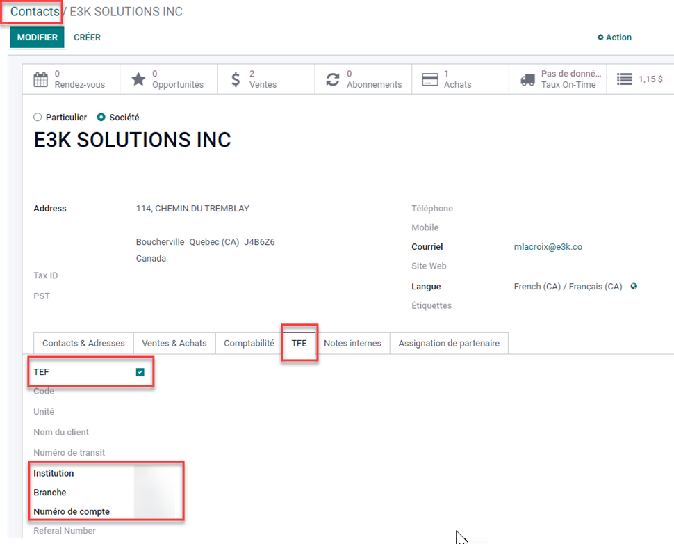
-
Dans le module COMPTABILITÉ, dans les configurations du journal du compte bancaire pour lequel sera effectué des TFE, la méthode de paiement « TFE » doit être créé pour les paiements sortants.
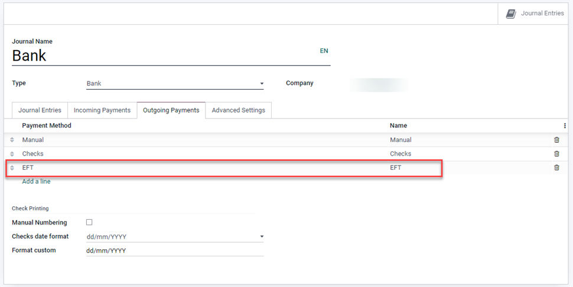
|
Fonctionnement du module |
|---|
-
Dans le module COMPTABILITÉ / FOURNISSEUR, créer un(des) paiement(s) en indiquant le moyen de paiement TEF afin de facilement repérer les paiements électroniques à faire.
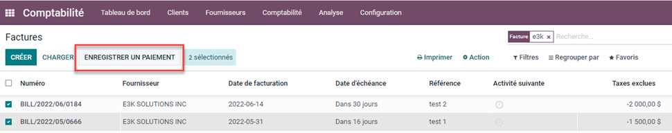
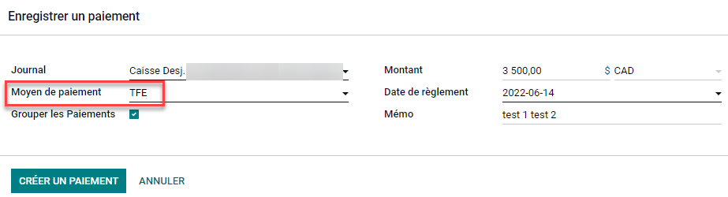
-
Dans le module COMPTABILITÉ / FOURNISSEUR / PAIEMENTS PAR TEF, cliquer sur CRÉER. Dans le nouvel enregistrement, renseigner la date du transfert, sélectionner la banque à utiliser et cliquer sur Ajouter une ligne.
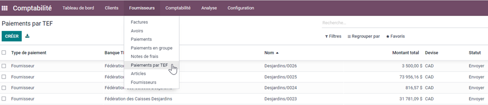
-
La liste des paiements TFE et Manuel qui n’ont pas déjà faits l’objet d’un TEF s’afficheront. Utiliser les outils de recherche, filtre et groupement au besoin pour cibler les paiements à inclure dans le fichier de transfert
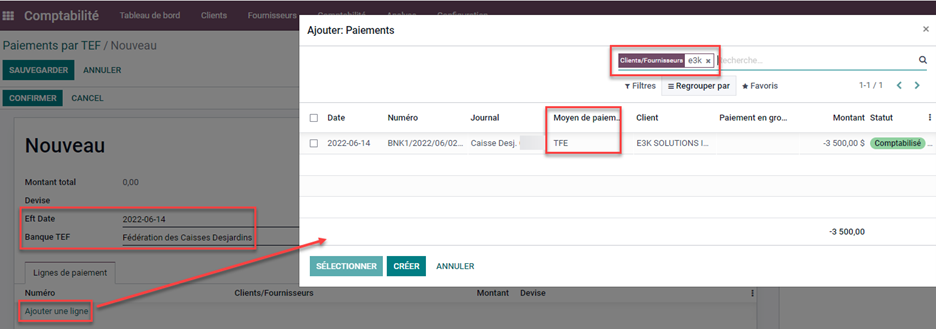
-
Le(les) paiement(s) sélectionnés seront ajoutés dans le TEF et le montant total sera automatiquement calculé. Les personnes autorisées peuvent confirmer le TEF pour permettre la création du fichier à transmettre à l’institution bancaire.
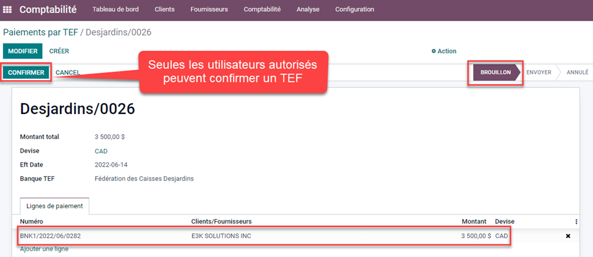
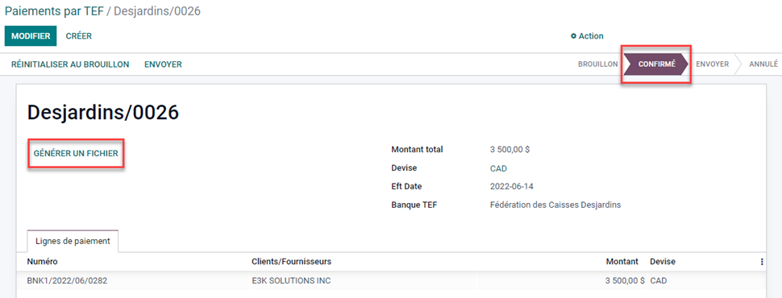
En cliquant sur GÉNÉRER UN FICHIER, Odoo génère un fichier .txt conformes aux exigences des principales banques canadiennes et l’ajoute dans le chatter d’où il peut être téléchargé et rechargé dans la plateforme informatique de l’institution bancaire.
-
On peut facilement voir que le paiement a été effectué par TEF
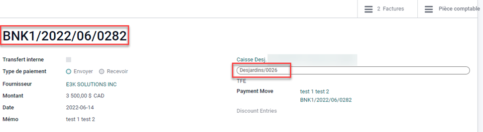
| |
|
Astuces possibles / autres informations importantes
|
|---|
-
Les étapes 1 à 5 du fonctionnement pour un paiement fournisseur sont pratiquement identiques lorsqu’il
s’agit de verser des sommes (crédits) à des clients. La différence étant que les factures
et paiements seront comptabilisés et que le module TFE sera accédé via le module COMPTABILITÉ / CLIENT
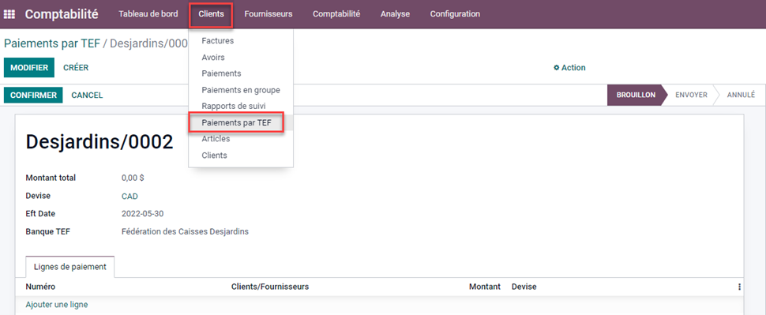
-
Les séquences de TEF sont importantes à respecter. La banque ne permettra généralement pas le transfert d’un numéro de TEF qui ne respecte pas la séquence (ex : numéro en double ou numéro manquant). Si un enregistrement TEF est créé par erreur, il faut l’annuler et le remettre en brouillon fin de conserver son numéro séquentiel. Les TEF annulés sont normalement des tests au démarrage réalisés auprès de la banque pour s’assurer de la conformité du format de fichier et de ses données de base.
|
|
|
|
|
|
| |
|